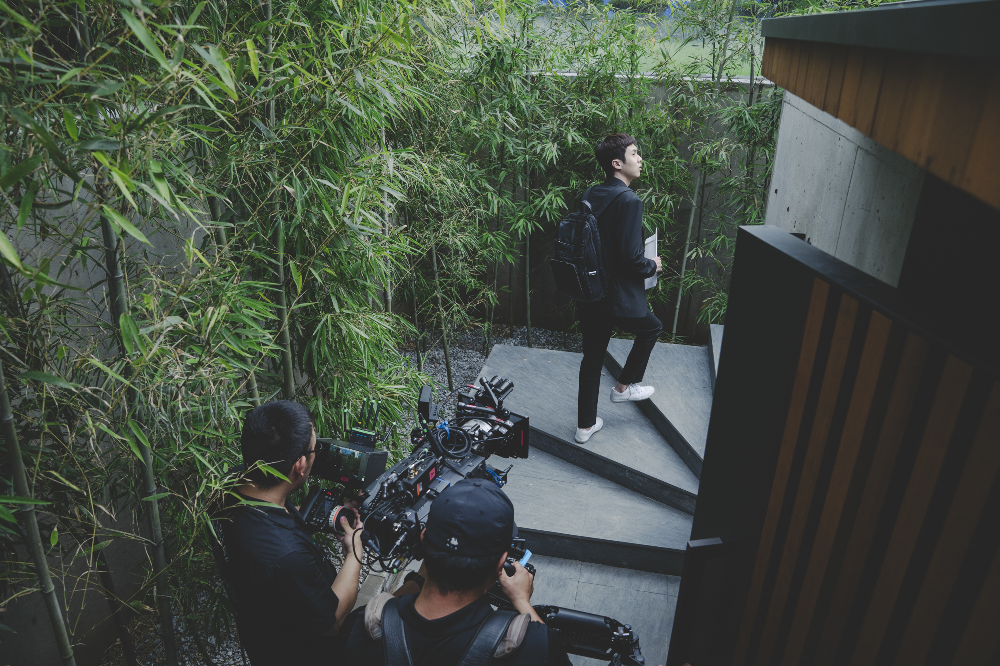

극과 극의 삶을 사는 두 가족의 만남이 빚어낸 신선한 스토리

“같이 잘 살면 안 될까요?” 공생이 어려워진 각박한 시대를 살아가는 사람들의 이야기 봉준호 감독은 <기생충>에서 전작을 통틀어 최초로 가족 구성원을 부모와 자녀가 다 함께 있는 형태로 설정했다. 또한 봉준호 감독의 작품 중 지금, 여기라는 시공간적 특성이 가장 중요하게 고려된 영화다. 주인공들은 지금 여기, 마치 우리 옆집이나 옆 동네에 살고 있을 것만 같은 두 가족이다. 이 두 가족은 부모와 자녀로 이뤄진 4인 구성이라는 닮은 점도 있지만 그 삶의 형편은 그야말로 극과 극이라 일상에서 만날 일도 엮일 일도 없어 보인다. 그러나 ‘과외 면접’이라는 상황이 주어지면서 두 가족 사이에 연결점이 생기고, 예측 불가능한 만남이 시작된다.
돌이켜보면 봉준호 감독의 영화는 언제나 현시대에 대한 이야기였다. <설국열차>에서는 부와 권력에 따라 서열화된 우리 시대 계급 문제가 보였고, <옥자>에서는 공장식 축산 시대 속에 고통받는 동물들의 문제가 있었다. 그런 그가 <기생충>에 등장시킨 주인공은 도저히 만날 일 없어 보이는 극과 극의 삶의 조건을 가진 ‘두 가족’이다. ‘어설픈 의도’와 ‘몇 번의 우연들’이 겹치며 예측불허의 상황으로 빠져드는 두 가족의 운명은 공생(共生)을 꿈꾸는 것 자체가 점차 공상(空想)이 되어가는 현대 사회의 자화상을 보여준다.
영화 <기생충>에는 악인이 등장하지 않는다는 점도 눈여겨볼 만하다. 두 가족의 충돌이 매번 예측할 수 없는 사건들을 터트리며 관객들에게 웃음과 슬픔을 선사하지만 <기생충> 인물 그 누구도 악한 의도를 가지고 있지 않다. 우리는 항상 상생 또는 공생을 바란다. 하지만 그것이 쉽지 않다는 것 또한 느낀다. 그것은 개인의 의지나 잘잘못과 무관한 것이 되었다. 봉준호 감독은 현재의 자본주의 사회를 살아가고 있는 우리에게 ‘함께 잘 산다’는 것에 대해 그만의 방식으로 질문을 던진다.
예측불허의 삶을 가로지르는 코미디와 서스펜스 그리고 슬픈 공감!
장르에 갇히지 않는 새로운 가족희비극 <기생충> 봉준호 감독은 항상 자신만의 화두와 스타일로 신선한 소재를 흥미롭고 완성도 높게 다뤄 평단의 지지와 관객의 사랑을 두루 받아왔다. 특정 장르의 틀에 갇히지 않는 상상력이 빚어낸 새로운 이야기에 현실과 사회에 대한 풍자와 날 선 비판을 담아 봉준호만의 독창적인 장르를 선보여 왔었다.
7번째 장편 <기생충>은 그 중에서도 가장 예측 불가능한 전개와 재미를 선사한다. 온 가족이 전원백수인 기택네 가족은 요금을 못내 가족 전원의 핸드폰이 끊길 정도로 살기 막막하다. 하지만 평화롭기 그지없는 가족들의 일상과 대화는 상황의 심각성과는 별개로 웃음을 유발한다. 또한 가족의 고정 수입을 확보하기 위해 과외 선생 면접을 통과해야만 하는 기택네 장남과 막내 딸의 포부는 치밀한 범죄모의라기 보다는 가족들의 평범한 삶을 위해 노력하는 엉뚱한 절박함으로 느껴져 헛웃음을 짓게 한다.
<기생충>은 두 가족을 중심으로 펼쳐지는 이야기다. 같이 잘 살고 싶었던 백수 가족의 엉뚱한 희망이 걷잡을 수 없는 사건으로 번져가는 극의 전개는 현실과 인생의 특성이기도 한 희비극적 정서를 충격과 공감으로 전해주며 봉준호만의 가족희비극을 완성해 냈다.
송강호, 이선균, 조여정, 최우식, 박소담, 이정은, 장혜진까지 연기파 배우들의 변신과 호연
두 가족의 흥미로운 앙상블 <기생충> 두 가족을 밀접하게 쫓아가는 <기생충>에서는 무엇보다 개성 있는 캐릭터들을 완성해 줄 배우들의 존재가 중요했다. 또한 가족을 연기해야 하기에 개인의 존재감 못지않게 한눈에도 가족이라고 납득할 수 있는 배우들 간의 호흡과 앙상블 역시 놓칠 수 없는 포인트였다.
전원백수 가족 기택네의 경우 가장 기택에는 송강호, 장남 기우에는 최우식 배우가 영화 착상 단계부터 일찌감치 자리를 잡았다. 봉준호 감독이 전작 <옥자>를 촬영하며, 최우식 배우를 눈여겨본 덕분에 이들이 부자(父子)로 나오면 재미가 있겠다고 생각했던 것. 이후 연기는 물론, 최우식과 눈매가 닮아 남매 분위기를 자연스럽게 자아내는 박소담 배우가 막내 딸 기정으로 캐스팅됐고, 이어 영화 <우리들>에서 현실감 물씬 풍기는 엄마를 연기해, 봉준호 감독의 눈에 포착된 장혜진 배우가 송강호 배우의 아내 충숙으로 낙점되며 하나의 가족이 완성됐다.
기택네 장남 기우가 과외 선생으로 발을 디디게 되는 부잣집 박사장네는 흔히 드라마에서 보던 익숙한 부자의 이미지, 재벌가와는 무척 다른 젊고 나이스한 인물의 느낌을 표현할 수 있는 배우들로 채워졌다. 스스로 글로벌 IT 기업을 일군 유능한 엘리트 박사장 동익에는 이선균 배우가, 순진하고 사람 잘 믿는 아내 연교에는 조여정 배우가 캐스팅됐다. 그리고 그들의 장녀 다혜 역에는 정지소가, 귀여운 막내 아들 다송 역에는 정현준이 오디션을 통해 가족으로 합류하게 됐다.
이렇듯 고유한 매력과 탄탄한 연기력을 갖춘 8명의 배우들로 색다른 두 가족이 탄생하게 됐다.
<설국열차> 홍경표 촬영 감독, <옥자> 이하준 미술 감독, 정재일 음악 감독
한국 영화의 가장 눈부신 현재를 만날 수 있는 영화! 한국영화 최고의 스탭들이 <기생충>을 위해 뭉쳤다. 최근작에서 세계적 스탭들 및 테크놀로지와 함께 했던 봉준호 감독이 영화 <기생충>에서는 100% 국내 스탭들과 그들의 재능을 모아 한국영화의 눈부신 현재를 확인하게끔 해준다.
<마더>, <설국열차> 등의 작품에서 잊을 수 없는 명장면들을 탄생시켰던 홍경표 촬영 감독, <하녀>, <도둑들>, <옥자> 등에서 촬영 효율과 미장센의 황금 조합을 구현해 온 이하준 미술 감독, 영화 음악가이자 창의적 음악 아티스트로 다양한 작업을 이어왔으며 <옥자>의 오리지널 스코어를 만들었던 정재일 음악 감독이 <기생충>을 스크린으로 불러내는데 함께 했다. 또한 영화 <마더>, <도둑들>, <독전> 등에서 인물의 성격과 매력을 인상적으로 표현했던 최세연 의상 감독과 <설국열차>, <검은 사제들>, <밀정>, <곡성> 등의 배우들에게 새로운 캐릭터의 얼굴을 찾아주었던 김서영 분장 감독도 힘을 보탰다. 이렇듯 봉준호 감독의 전작에서 좋은 호흡과 시너지를 냈던 국내 최고 수준의 스탭들이 다시 한번 봉준호 감독과 호흡을 맞춰 <기생충>의 눈부신 퀄리티와 섬세한 완성도를 이뤄내는 데 기여했다.
[ PRODUCTION NOTE ]
반지하 전원백수 기택네 집부터 언덕 위의 박사장 집까지! 극과 극 두 가족의 삶의 공간을 담아낸 프로덕션 디자인! <기생충>에 펼쳐진 공간은 영화의 스토리와 직결된다. 로케이션과 실제 오픈 세트가 동시에 사용된 <기생충>의 프로덕션은 전원백수인 기택네 가족의 공간인 반지하 집에서 출발해 언덕 위 박사장 집에 이른다. 기우의 과외 면접 동선이기도 한 이 수직 구조는 두 가족의 사회적 위치를 대변한다. 따라서 기우가 면접을 보러 가는 동안 오르는 계단들과 다시 반지하 집에 이르기 위해 내려가야 하는 계단들은 공간과 공간을 이어주는 역할을 넘어 역시 현대사회의 수직적 질서에 대한 메타포로 기능하고 있다.
줄거리 60% 이상의 무대가 되는 박사장 집은 유명 건축가가 지었다는 설정이었기 때문에 취향과 예술적 혜안이 반영된 건축이어야만 했다. 특히 굽이굽이 코너를 돌 때마다 새로운 비밀이 나오는 것 같은 이 집의 독특한 구조는, 봉준호 감독이 시나리오를 쓰기 전부터 주문한 사항이었다. 관객들에게는 자연스럽고 아름다운 주거 공간으로 비춰지면서도, 캐릭터들이 만나고 단절되는 다층적인 구조를 가지고 있어야만 했던 것이다.
두 집 사이의 대조와 각 공간의 리얼리티, 그리고 영화의 메시지를 내포한 다수의 디테일을 통해 완성된 <기생충>의 공간들은 동시대를 살고 있으나 엮일 일 없어 보이는 두 가족의 삶의 배경을 설득력 있게 보여준다. 그리고 인물의 동선을 따라 드러나는 비밀과 사건들에 훌륭한 이유를 제공한다.